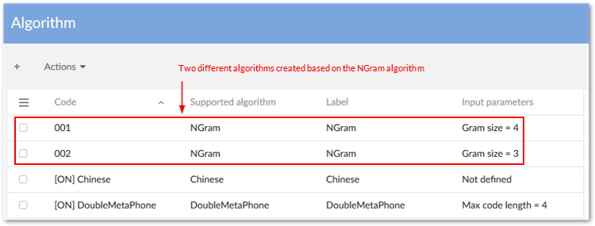
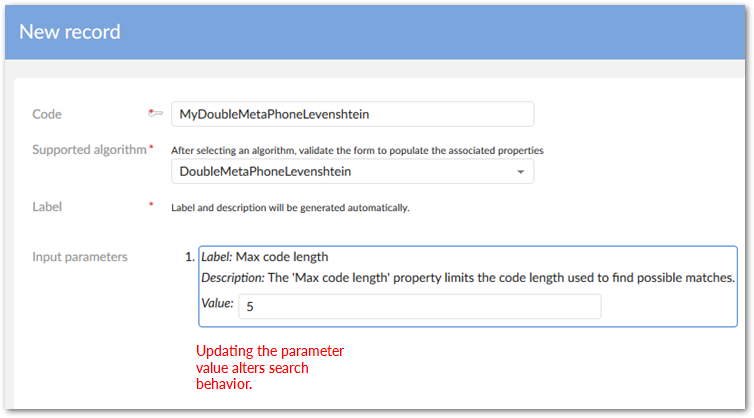

The add-on comes bundled with a set of ready-to-use algorithms. You can create a new algorithm based on one of these default algorithms and edit its parameters to customize behavior. As shown below, you could use the N-Gram algorithm to create two algorithm definitions with different values for the input parameters.

When you create a new algorithm, fill in the Code field, choose a Supported algorithm, and click the Save button. The label and description automatically update, and a list of default parameters displays in the Input parameters section. The parameters that display depend on the selected algorithm. After you finish customizing parameter values for the new algorithm, click Save and close. Your newly created algorithm displays in the Algorithm table and is ready to use.
The following image shows a newly created algorithm configuration based on the DoubleMetaphoneLevenstein pre-defined algorithm with its Max code length value updated to 5.

The table below lists all algorithms from which you can customize parameters in order to create new algorithms.
Algorithms | Default parameters | Parameter configuration |
|---|---|---|
DoubleMetaphone | Max code length = 4 | This phonetic algorithm works best on short strings, such as proper names. It is especially adept at returning words or names whose actual pronunciation may be different than the search text entered. The Max code length property limits the code length used to find possible matches. When you enter a search string, the algorithm encodes it as a key and returns words with matching keys. You should set this property to a value that reflects the length of text being searched. For example: If you specify a value of 4, the algorithm encodes the three words "cricket", criket" and cricketgame" as "KRKT". The algorithm considers the three words a match. If you changed the value to 8, "cricket" and "criket" are still encoded as "KRKT". However, it encodes "cricketgame" as "KRKTKM". In this case, "cricketgame" no longer matches. Note that this algorithm cannot be used to search numeric, date/time, or special character formats. Also, due to the way the algorithm processes phonetic structures, a search for "www" returns no result. |
DoubleMetaphone Levenshtein | Max code length = 4 | Being a phonetic algorithm, Double Metaphone may fail to match misspelled words when the misspelling substantially alters the phonetic structure of a word. The Double Metaphone Levenshtein algorithm can compute distance between two long strings, but at the cost to compute it, which is roughly proportional to the product of the two string lengths. So, a combination of these algorithms reduces their limitations. Levenshtein may find similarity between encoded strings, and the length of encoded strings is limited by Double Metaphone. |
NGram | Item size (n) = 2 | This algorithm partitions search criteria into subsets of a specified length called NGrams. You set this length using the Gram size property. For example, if you set this property to a value of 3, the algorithm splits the word PHASED into the following N-Grams: PHA, HAS, ASE and SED. PHASED is then added to the lists of words containing those N-Grams. Keep in mind that if you set the size too small, the algorithm may not capture important differences and return too many terms. If the size is too large, the opposite is true and may result in few returned results. Therefore, when used for names, a value of 3 or 4 is recommended. For phone numbers, a value of 7. |
JaroWinkler | threshold = 0.7 (a condition to add Winkler distance or not. Value is from 0 to 1) | This algorithm works best on short strings, such as proper names. It tallies the number of characters in common and places a higher emphasis on differences at the start of the string. Therefore, the lower you set the Threshold parameter, the more impact differences at the beginning of strings have. Threshold parameter values should be from 0.0 to 1.0. |
FuzzyFullText | Similarity = 0.7 Prefix length = 0 | This algorithm works best for general strings like those contained in descriptions. This algorithm finds a similar, or fuzzy, match of the keyword text entered. The Similarity parameter determines how similar results have to be before they are returned. The higher you set the value, the fewer results and vice versa. The Prefix length parameter specifies that a number of characters from the beginning of the keyword must exactly match data being searched in order to return a result. For example, if you set the value to 2 and use the keyword "Automotive", the algorithm only considers words that begin with "au" as potential matches. |
FuzzyJapanese | Similarity = 0.7 Prefix length = 0 | This algorithm performs a search on Japanese text and finds a similar, or "fuzzy" match. This algorithm allows you to use the following character types or any combination thereof: Kanji, Katakana and Hiragana. The Similarity parameter defines a value between 0 and 1, which is used to set the required similarity between the query terms and the matching terms. The similarity level is calculated based on the Levenshtein algorithm. For example: For a similarity of 0.5, a term of the same length as the query term is considered similar to the query term if the edit distance between both terms is less than length(term)*0.5. The keyword 'クリニク' will match with 'クリニック' if the Similarity < 0.75. The Prefix length parameter specifies the number of characters-from the beginning of the search term-that must exactly match in order to return a result. For example: The keyword 'クリニク' will match 'クリニック' if the Prefix length < 4 and Similarity = 0. |
SearchDate | Threshold = 5 | This algorithm allows you to search on fields with date or, date-time data types. In order for a date to match, it must be in the range specified by the search input plus/minus the value set in the Threshold parameter. The closer the search input is to the data being searched, the higher the score. In order for a date to match, it must be in the range specified by the search input plus or minus the value set in the Threshold parameter. If the Threshold value increases, the score decreases. Score = 100-(distance*100/threshold). |
SearchNumber | Threshold = 5 | This algorithm allows you to search on fields with a numeric data type. In order for a number to match, it must be in the range specified by the search input plus/minus the value set in the Threshold parameter. The closer the search input is to the numbers being searched, the higher the score. In order for a number to match, it must be in the range specified by the search input plus or minus the value set in the Threshold parameter. If the Threshold value increases, the score decreases. Score = 100-(distance*100/threshold). |
You can search in fields whose data types are integer, decimal, date, or date time. To search fields with date data types, you must configure the desired fields to use the Search Date algorithm. To search fields with integer, or decimal data types, you must use the Search Number algorithm.
After you have configured fields to use the Search Date algorithm, to search for Date, input the Date string in 'DD/MM/YYYY' format for French and 'MM/DD/YYYY' format for other languages.
The Japanese and Fuzzy Japanese search algorithms allow you to retrieve results written in the Japanese language by using one, or a combination of three Japanese alphabet charts: Kanji, Hiragana, and Katakana. The Fuzzy Japanese algorithm works best for general strings like those contained in descriptions by finding a similar, or fuzzy, match of the keyword entered.
To apply the Japanese search algorithm, you navigate to the Searched fields table in the EBX® Information Search Add-on configuration, then specify the Japanese search option on the Primary search algorithm field.
Once you have completed the configuration, you can execute a search as usual.